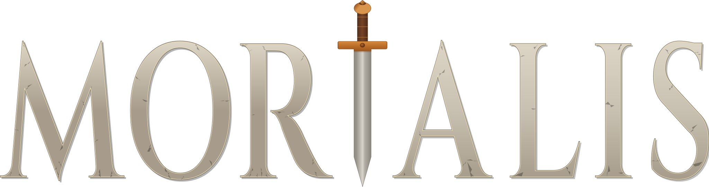

Domormu presents
Mortalis

Dark fantasy sandbox RTS/RPG
Start as a nobody among many in a brutal world where factions wage holy wars, settlements are conquered and enslaved, and the unlucky become food. Carve out a slice of glory for yourself, or die trying.
Media
Follow Mortalis
Creator
Domormu
I have been making games for myself since I was a kid.
It started with RPG Maker. I would build entire little worlds, write their characters and history, then play them alone without sharing them with anyone. As I got older, I did the same thing in the Warcraft III and Arma 2 editors. I liked creating a place, filling it with characters, and seeing what happened once the world was left on its own.
Games like Warcraft III, World of Warcraft, Old School RuneScape, and Mount & Blade: Warband stayed with me. Their worlds felt larger than the player. You could get lost in them. You could fail in them.
I first opened Unity and began working on the idea that would become Mortalis around 2017. It followed me through six years in the Air Force, college, a deployment, restarts, and long stretches where I had no choice but to put it on the back burner. I never fully put it down.
My background in psychology also shapes the way I think about games. I am fascinated by the way players grow attached to their characters, especially in a world where anything can happen and there is no guarantee that things will go well.
That is what I am trying to build with Mortalis: a handcrafted world that keeps moving on its own and gives players the chance to come away with a story that could only have happened to them.
After years of imagining and rebuilding it, I am now committed to seeing Mortalis through.